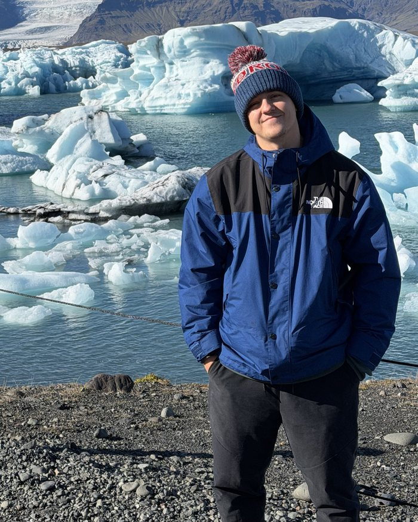

Vezměte reprezentaci. Doveďte ji na fotbalový Olymp.
Každý zápas se počítá v telefonu. Žádný účet, žádný server, žádný signál.
Vezměte velmoc i otloukánka. Všechny od prvního dne, žádná zamčená.
Kvalifikace, kontinentální pohár, mistrovství světa, a zase od začátku.
Měňte rozestavení, střídejte a v poločase k nim promluvte.
Určíte pořadí exekutorů a kopete je sami.
Od U-13 po U-21. Sledujte kluka roky a uvidíte, co z něj bude.
Vaši hráči mění kluby každé léto, jdou nahoru i dolů.
Třicet druhů otázek a feed, který má na vaše odpovědi názor.
Dovednosti, které rostou, štáb k najmutí, rozpočet svazu k rozdělení.
Cíle na každý cyklus a následky, když je nesplníte.
Každý start i gól se počítá a čeká na vás sedmatřicet výzev.
Žádné předplatné, žádné reklamy, žádná herní měna.
Zahrajte si celý cyklus zdarma a bez omezení. Hodina dvě, a budete vědět, jestli vám hra sedí.

Jmenuji se Martin a jsem vývojář, cestovatel a milovník fotbalu. Odmala jsem místo stříleček hrál fotbalové manažery, a právě proto vznikl tenhle projekt.
Chtěl jsem něco rychlého, co si zahrajete na záchodě i v tramvaji a offline v letadle, ale co má zároveň dost hloubky a nekonečné hraní. Máte nápad na vylepšení? Klidně mi napište na e-mail.